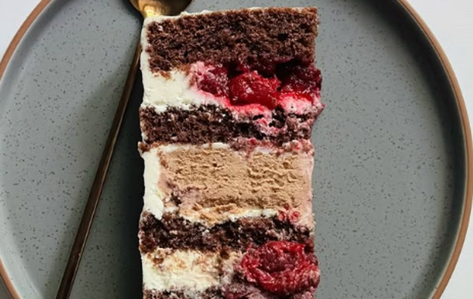
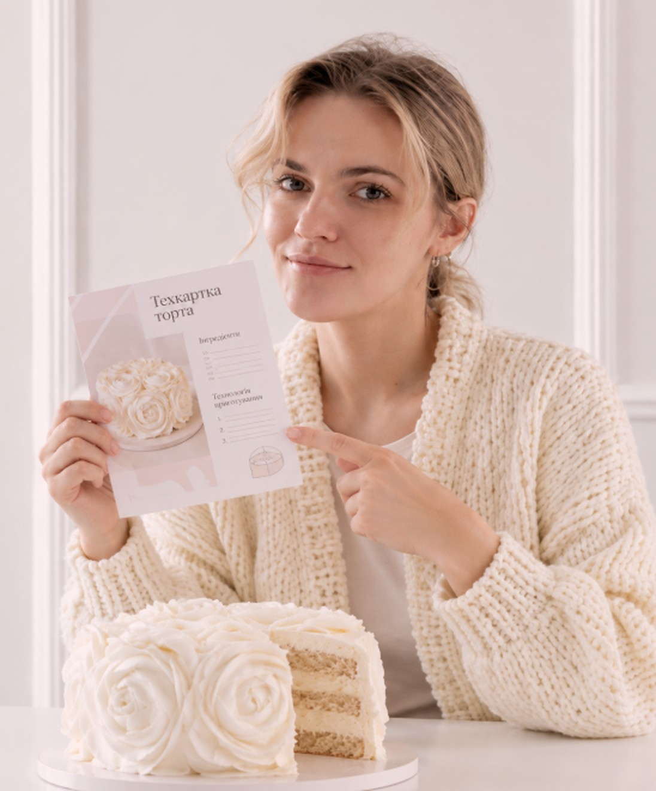
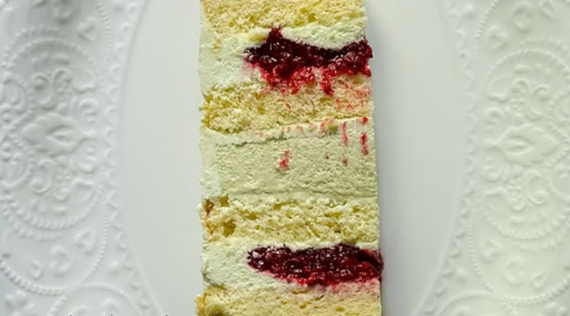
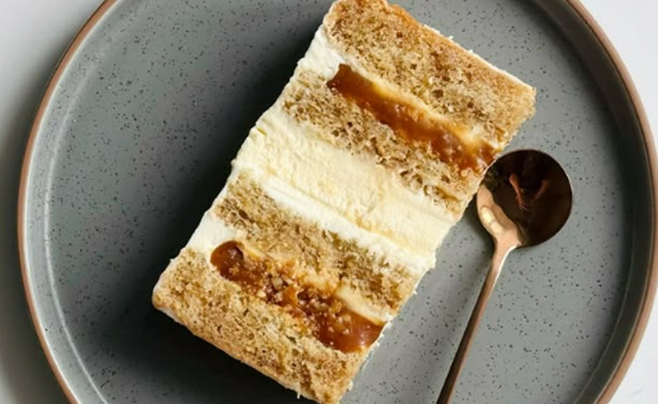
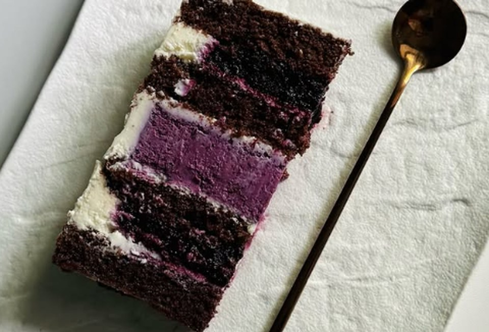
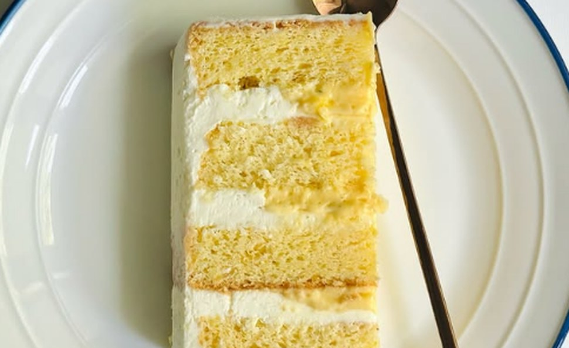
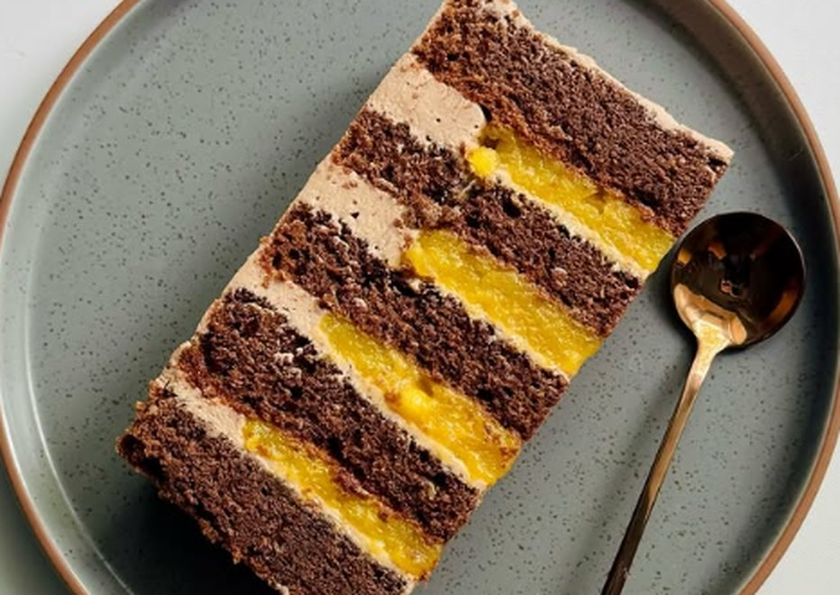
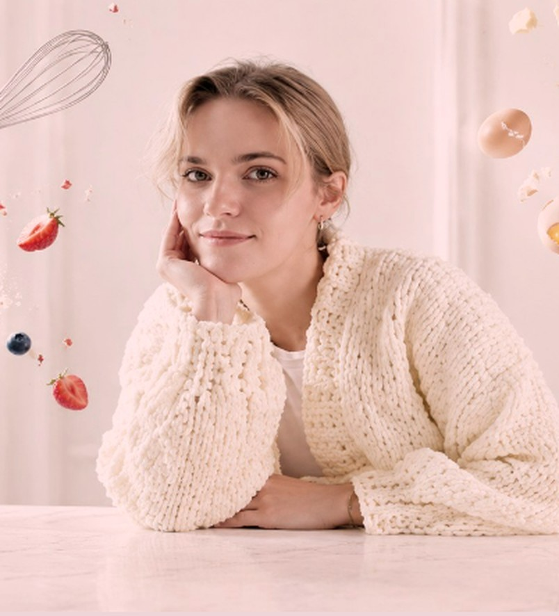

Вишня-шоколад
- Просочені шоколадні коржі
- Шоколадний чізкейк
- Вишневий соус
- Ванільно-вершковий кремчіз
300 грн
Техкарти тортів на кожен смак: для першого замовлення, нового смаку в меню чи родинного свята.

Це цифрові рецепти у форматі PDF, а не замовлення готових тортів.
Що всередині техкарти
Техкарта — це детальний рецепт торта у PDF: точні грами, температури й порядок дій для кожного шару. Інструкція, за якою торт щоразу виходить однаковим.
Зрозумілі кроки й точні грами: менше помилок з першого разу.
Святковий торт удома без пошуку й перевірки рецептів.
Перевірений смак для меню без довгих тестувань.
Один смак, збірка чи повний пакет
Розміри вказані для форми Ø 18 см. Інша форма? Перерахуйте в калькуляторі.






Кілька техкарт в одному наборі.
Усі наявні смаки; нові додаватимуться з часом.
Не виходить шар чи щось незрозуміло в рецепті? Пишіть Марії в Direct — вона відповість на питання за техкартою й підкаже, що виправити.
Дякуємо, ви в списку!
Напишемо, щойно з'являться нові техкарти.

Авторка та відгуки
Марія — кондитер із Дніпра, авторка marymar. Вона створювала торти на замовлення: весільні, святкові, подарункові. Коли підписники в Instagram почали просити навчити їх, з'явилася ідея передати досвід у техкартах: з точними грамами й тим самим підходом, що стоїть за її тортами.
...торт був дуже смачний, дякуємо ... Запитували ваші контакти, поділились) ... Хочемо замовити ще для себе такий самий, тільки вже менший
ми з чоловіком не встигли навіть скуштувати торт ... всім дуже сподобався, гості забрали все, нічого не залишилось через 5 хвилин після нарізання
Я дуже вдячна за торт - шедевр у Вашому виконанні ... Чоловік був в шоці!!! ... Він дійсно в захваті і я в захваті!
Так клієнти відгукуються про торти Марії.
Безкоштовний калькулятор
Безкоштовний калькулятор як корисний інструмент для кондитерів.
Розрахунок для круглих форм з однаковою висотою шарів.
Обрати техкартуВідповіді на запитання
Формат PDF, вміст техкарти, оплата та отримання файлу.